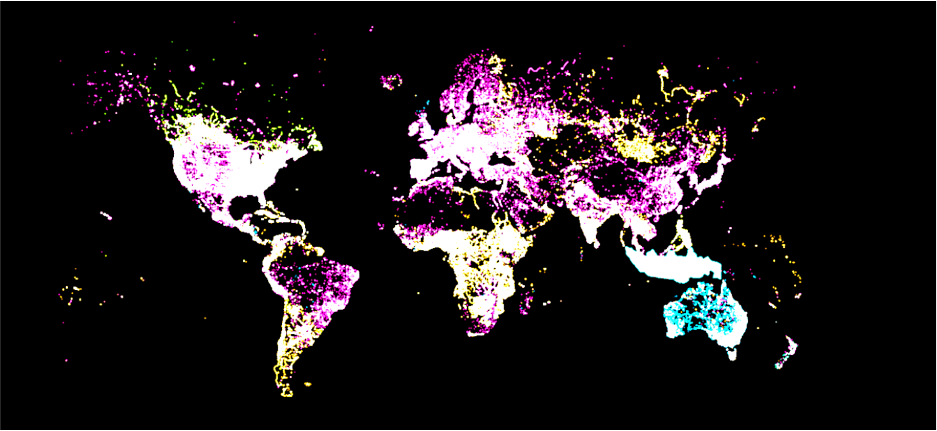
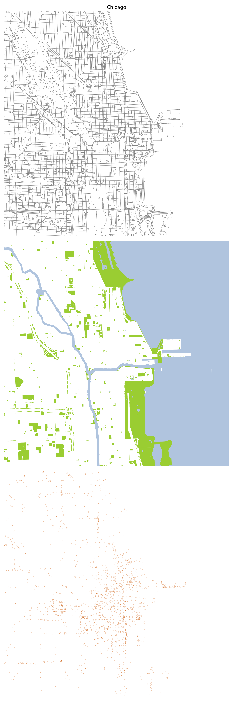
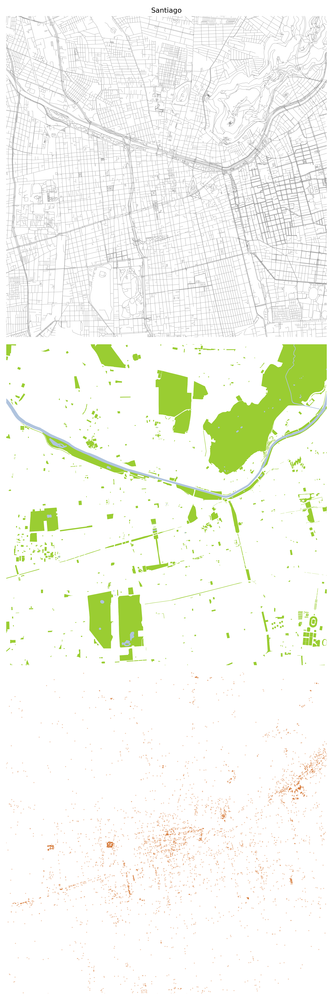
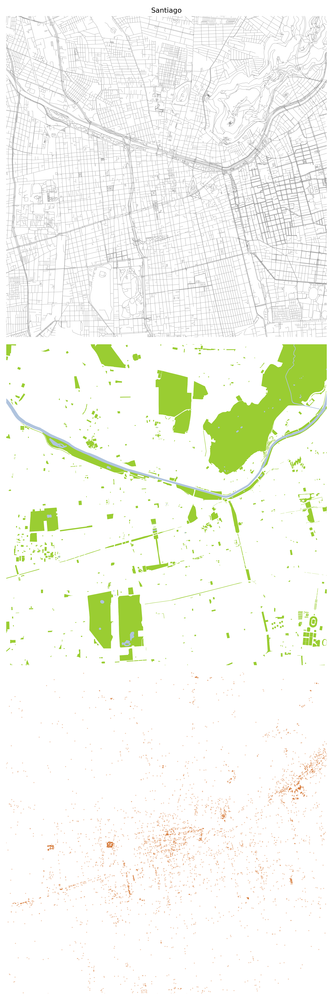

OSM data
An astonishing record of 100 million contributions have been added to OpenStreetMap providing critical infrastructure for understanding the built environment of cities1 where the majority of the global population lives. While OSM originated as a wiki, crowdsourced and collaborative project, it can be speculated that the growth of OSM has recently exploded due to the participation of corporate mappers2.
In this exercise I explore a set of urban features extracted from OSM which are considered relevant for describing the form and organisation of cities.

Python packages
There are a handful of packages to read OSM data directly into the programming environment. In my experience Python packages have resulted to be more reliable when downloading data than those available in R. The main difference between the most common packages OSMnx3 and Pyrosm4, is that OSMnx reads the data from the OverPass API and Pyrosm reads data from PBF data providers. In this exercise I’ll adapt the code we used for a study that explores new trends in mapping the space of the street in OpenStreetMap5.
An atlas of urban form
The form of cities can be studied through many different approaches6. In this study I chose to examine the urban topography of cities by plotting 3 sets of data for 9 city centres: the street grid7, green & blue features and Points of Interest. Each city centre was defined as a ~5 square km cut-off from a selected central landmark. The resulting drawings are displayed at the same scale side-by-side not only to provide orientation about the different morphological patterns but also to compare the different urban dimensions8. Some interesting observations can be made. Water bodies and big green areas establish a certain of order that’s followed by street grids. Central Park in New York is as large as the system of parks in London (St. James, Green and Hyde parks) an also comparable in size with the Parque Metropolitano in Santiago (Cerro San Cristobal). Surprisingly Barcelona doesn’t have a central large green area, and the same applied to Mexico City and Lima. While the density of Points of Interest is biased by the potential higher mapper activities, there tends to be a trend of higher concentration of POI in cities that seem to have higher street level activity and density at their centres (Paris, Barcelona, London, New York, Tokyo).



 



Footnotes
See ‘100 million edits to OpenStreetMap | OpenStreetMap Blog’ (no date). Available at: https://blog.openstreetmap.org/2021/02/25/100-million-edits-to-openstreetmap/ (Accessed: 29 April 2022).↩︎
See Anderson, J., Sarkar, D. and Palen, L. (2019) ‘Corporate Editors in the Evolving Landscape of OpenStreetMap’, ISPRS International Journal of Geo-Information, 8(5), p. 232. doi:10.3390/ijgi8050232.↩︎
See https://github.com/gboeing/osmnx↩︎
See https://pyrosm.readthedocs.io/en/latest/#when-should-i-use-pyrosm↩︎
See https://github.com/npalomin/map-sbb↩︎
Amongst others, see Moudon, A.V. (1997) ‘Urban morphology as an emerging interdisciplinary field’, Urban Morphology, 1(1), pp. 3–10.↩︎
See @anvaka interactive site for visualising and downloading street data↩︎
For a study on urban squares comparison for urban design see Squares. Urban Spaces in Europe↩︎
Citation
@online{palominos2022,
author = {Nicolas Palominos},
title = {Urban Morphology Patterns from {OSM} Data},
date = {2022-04},
langid = {en}
}